Programmazione - Progetti
Cliccando sulla voce di menù “Progetti”, presente all’interno della voce “Programmazione”, si aprirà la pagina dove sarà possibile visualizzare le iniziative progettuali inserite. In questa pagina l’utente vedrà solamente i progetti di cui è responsabile, i progetti che ha creato o per i quali è Direttore di Riferimento. La Scheda “Progetti” sarà quindi accessibile da tutti i Responsabili di CDR ed eventualmente anche dai singoli utenti (non Responsabili di CDR) sulla base del ruolo ricoperto e della fase del progetto (Fig. 1).
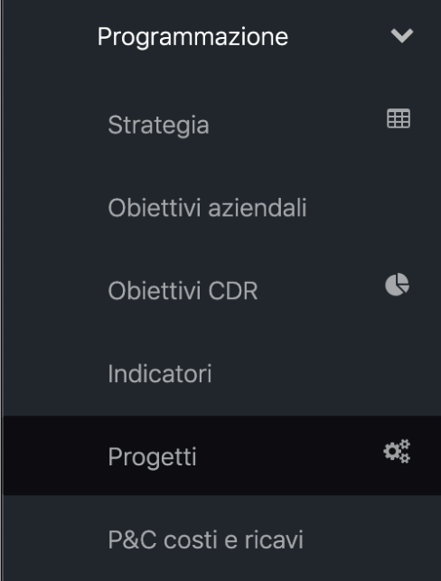
Gli utenti che accedono alla scheda “Progetti” avranno privilegi specifici sulla base del ruolo ricoperto all’interno delle varie fasi del processo. Nella prima fase, il Responsabile di CDR creerà il nuovo Progetto all’interno della scheda “Progetti”, indicandone il titolo ed il Responsabile di Progetto (Fig. 2).
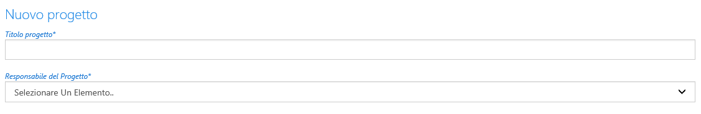
Nella fase successiva, il Responsabile di Progetto, precedentemente indicato, accede alla scheda “Progetti” e provvede alla compilazione della “Scheda Progetto” secondo il format proposto. Attualmente le sezioni di cui si compone la scheda sono a) Progetto; b) Partner interni - Selezione dei CdR che collaborano al progetto; c) Fasi e tempi di realizzazione; d) Indicatori; e) Finanziamenti dedicati al progetto; f) Monitoraggio. All’interno della prima sezione, il Responsabile del progetto dovrà dichiararne la tipologia:
- P1: il progetto ha impatto su personale/ risorse/ processi di tutta l'Agenzia o su strutture/ persone esterne all'Agenzia;
- P2: il progetto ha impatto su personale/ risorse/ processi di uno stesso Dipartimento;
- P3: il progetto ha impatto su personale/ risorse/ processi di una singola UOC/ UOSD/ UOS in staff;
- P4: il progetto ha impatto su personale/ risorse/ processi di una singola UOS
Proprio sulla base della tipologia i contenuti vengono approvati dal Responsabile di Riferimento secondo quanto segue:
- i progetti di tipo P1 vengono approvati dal Direttore Strategico competente, individuata sulla base della gerarchia organizzativa e del CDR che ha inserito il progetto;
- i progetti di tipo P2 vengono approvati dal Direttore di Dipartimento;
- i progetti di tipo P3 e P4 vengono approvati dal Responsabile di CDR.
Una volta approvato, il Responsabile di progetto dovrà inserire il codice univoco ERP assegnato al progetto e proseguirne l’attuazione, compilando le rendicontazioni intermedie e finali oppure, laddove necessario, proponendo una nuova versione modificando i contenuti della scheda che andranno quindi di nuovo sottoposti al Responsabile di Riferimento. Tra i vari contenuti in evidenza all’interno della scheda soprattutto, vi sono, come accennato in precedenza, i box dedicati alle fasi e tempi di realizzazione (Fig. 3); agli indicatori (Fig. 4) e ai finanziamenti (Fig. 5), utili soprattutto per le fasi di rendicontazione (Fig. 6 - 7).
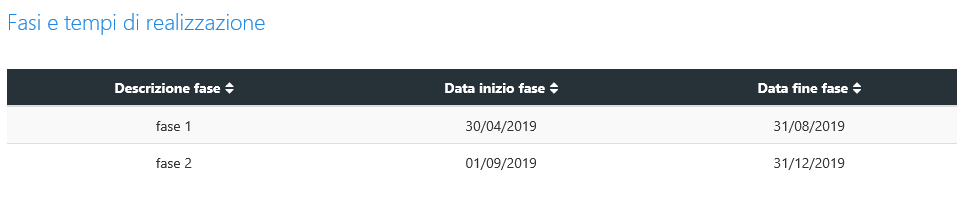
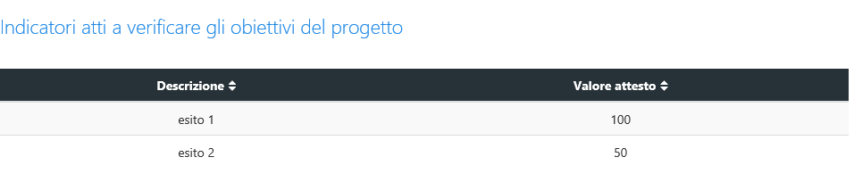
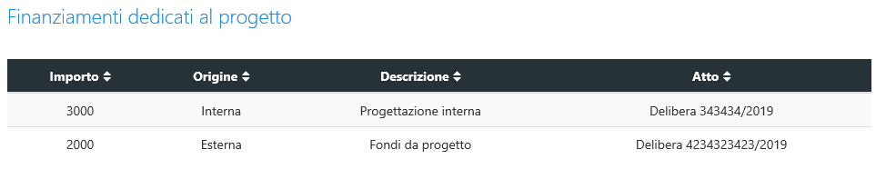
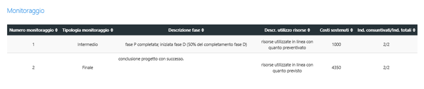
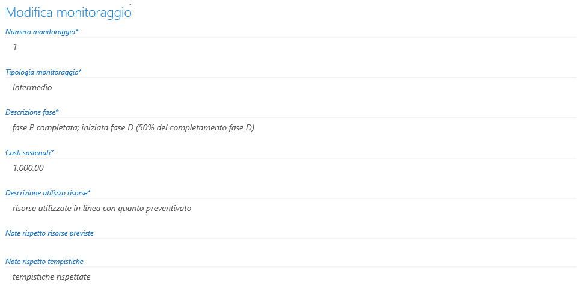
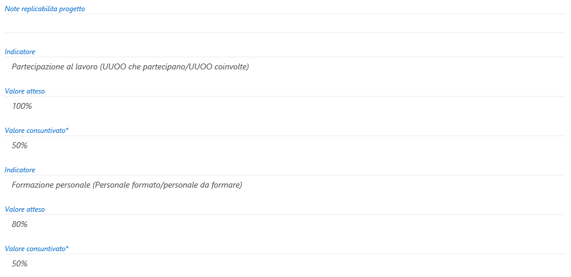
Al termine del Progetto il Responsabile di Progetto redige una valutazione conclusiva dell’iniziativa progettuale mediante il format proposto dalla Scheda che il Responsabile di riferimento validerà definitivamente (Fig. 8).
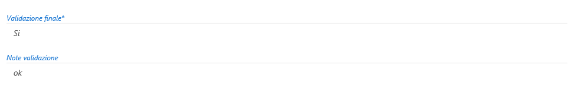
L’amministratore di sistema
Le principali funzioni dell’amministratore all’interno di questa sezione sono:
- accesso a tutte le sezioni in uso per ciascuno degli utenti della scheda e modifica dei contenuti inseriti da ciascun utente;
- riepilogo di tutti i progetti inseriti e del loro stato di avanzamento;
- modifica delle date di chiusura/avvio delle diverse fasi della singola proposta di progetto al fine di consentire la revisione della proposta o dell’approvazione.
Strumenti di amministrazione
All’interno del menù Programmazione, a lato della voce “Progetti” sarà visibile e cliccabile per l’amministratore di sistema l'icona per accedere alla sezione per la gestione delle tabelle di supporto (Fig. 9).
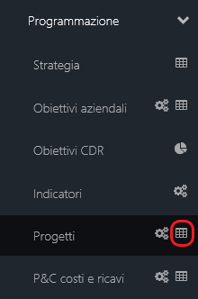
Accendo alla tabella, si aprirà una nuova pagina (Fig. 10), contenente diversi TAB (Risorse Finanziarie Disponibili; Territorio Applicazione; Tipo Progetto; Tipologia Monitoraggio) che consentiranno di configurare/modificare la pagina principale del modulo Progetti.
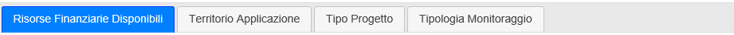
Il primo pannello a disposizione dell’amministratore è quello relativo alle "Risorse Finanziarie Disponibili" (Fig.11) in cui sono riportati gli items inerenti le risorse finanziarie da dedicare al progetto e la possibilità di aggiungerne di nuovi mediante il tasto “+Aggiungi” (Fig. 12) o eliminarne, laddove inutilizzati mediante l’icona “Cestino”. Le azioni di modifica/cancellazione dei record sono inoltre possibili, cliccando direttamente su uno degli items già inseriti e accedendo quindi ad un’ulteriore finestra (Fig. 13).
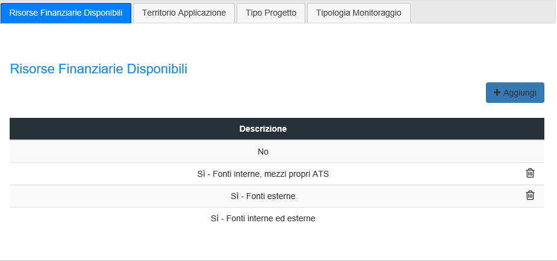
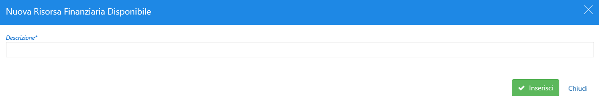
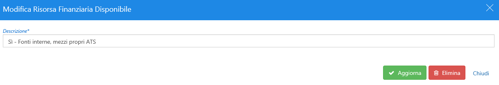
A seguire è presente il pannello relativo al "Territorio di applicazione" (Fig. 14) in cui è possibile inserire il relativo dato che verrà visualizzato da tutti gli utenti all’interno del modulo "Progetto". Anche per questa sezione, sarà possibile inserire nuove descrizioni con il tasto “+Aggiungi”, eliminarne attraverso il “Cestino” e, cliccando sul singolo item già inserito, accedere alle funzioni di aggiornamento/cancellazione (Fig. 15).
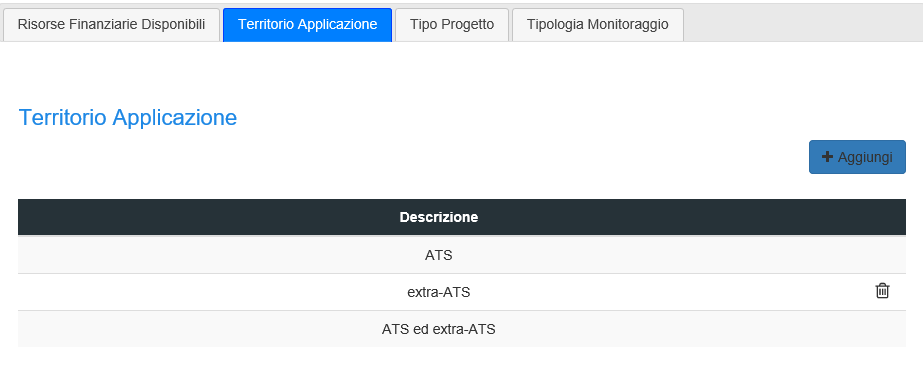
Nel Pannello "Tipo Progetto" (Fig. 16) viene definita e visualizzata la tipologia dei progetti. Al suo interno, come per i precedenti casi, possono essere sempre compiute le azioni di aggiunta, aggiornamento ed eliminazione di eventuali record, sia direttamente dalla maschera proposta sia accendendo, cliccando, ad ogni singolo CdR (Fig. 17).
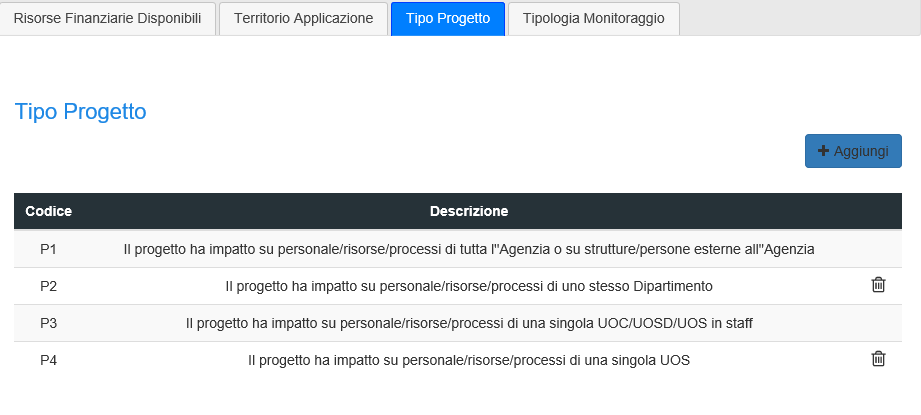
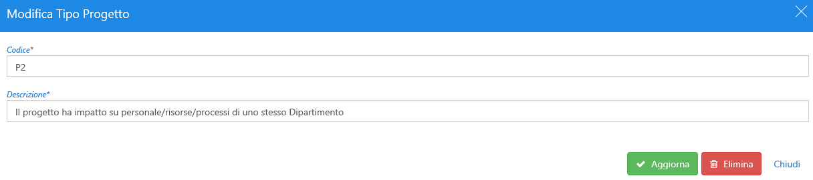
Infine in "Tipologia Monitoraggio" (Fig. 18) sono definite le fasi della rilevazione e, a differenza dei precedenti TAB, è consentita la sola possibilità di inserimento di nuove fasi (Fig. 19) o di modifica delle esistenti (Fig. 20).
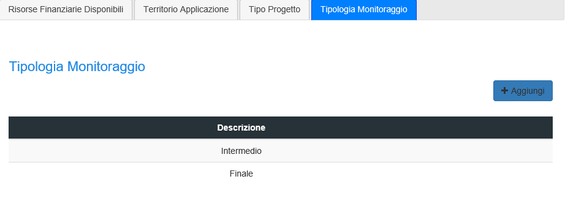
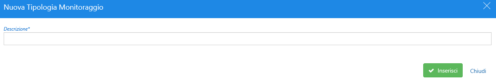
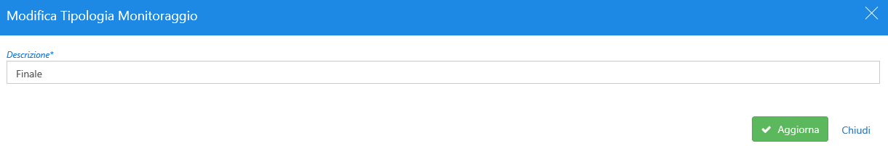